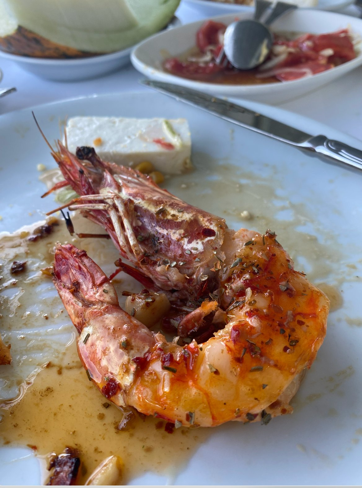
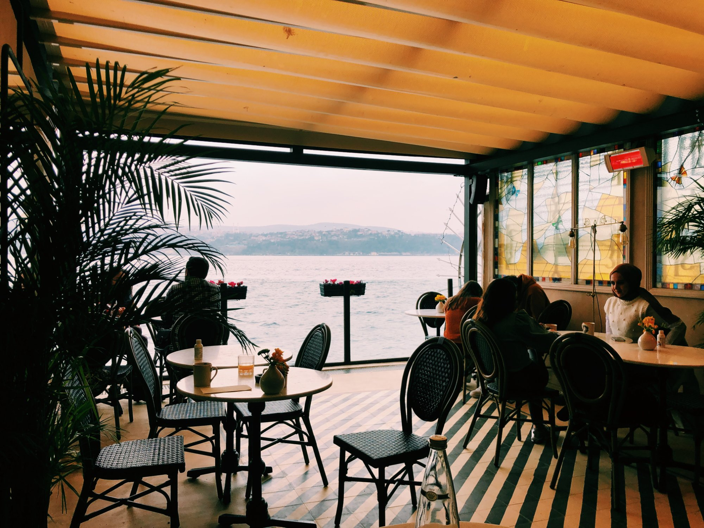
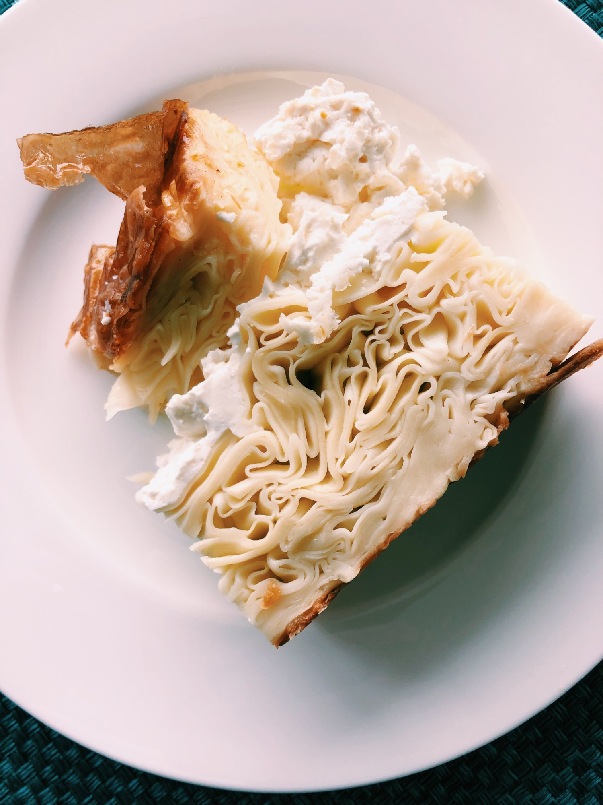
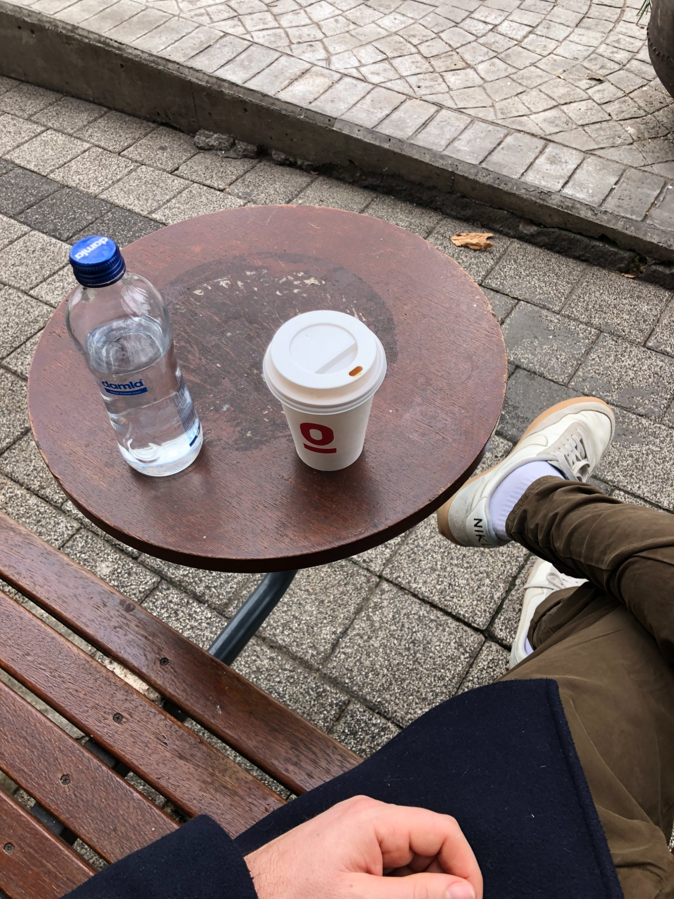
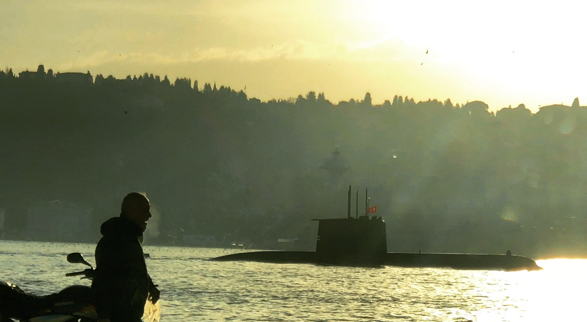
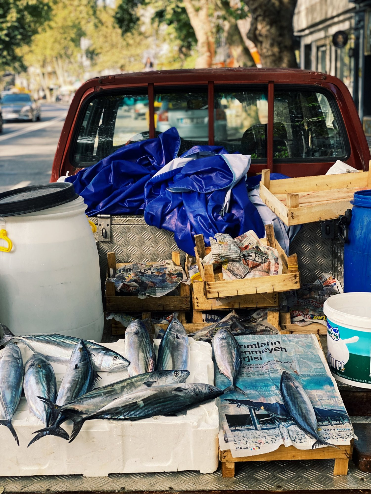
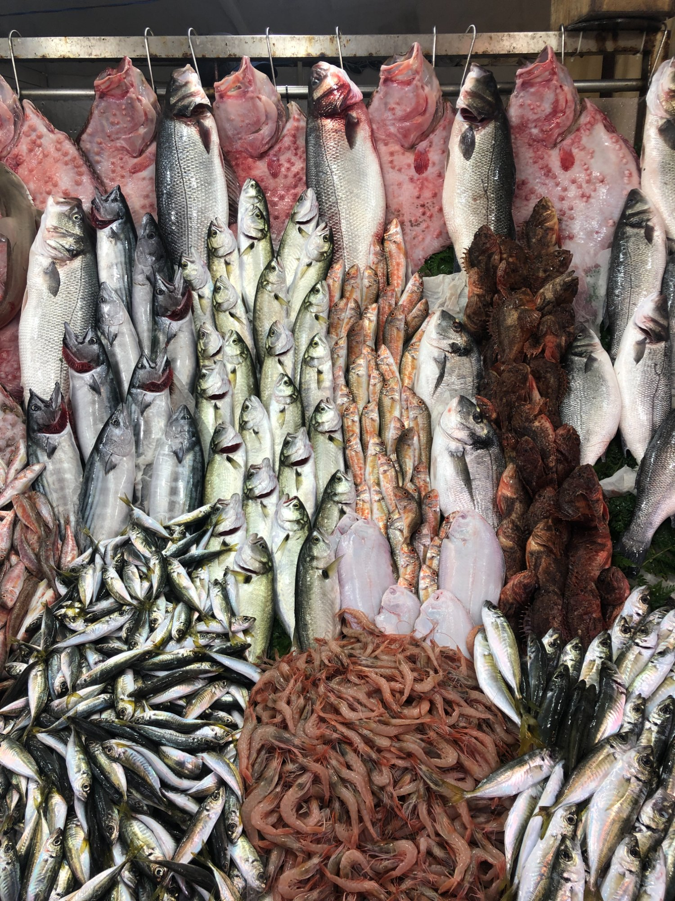
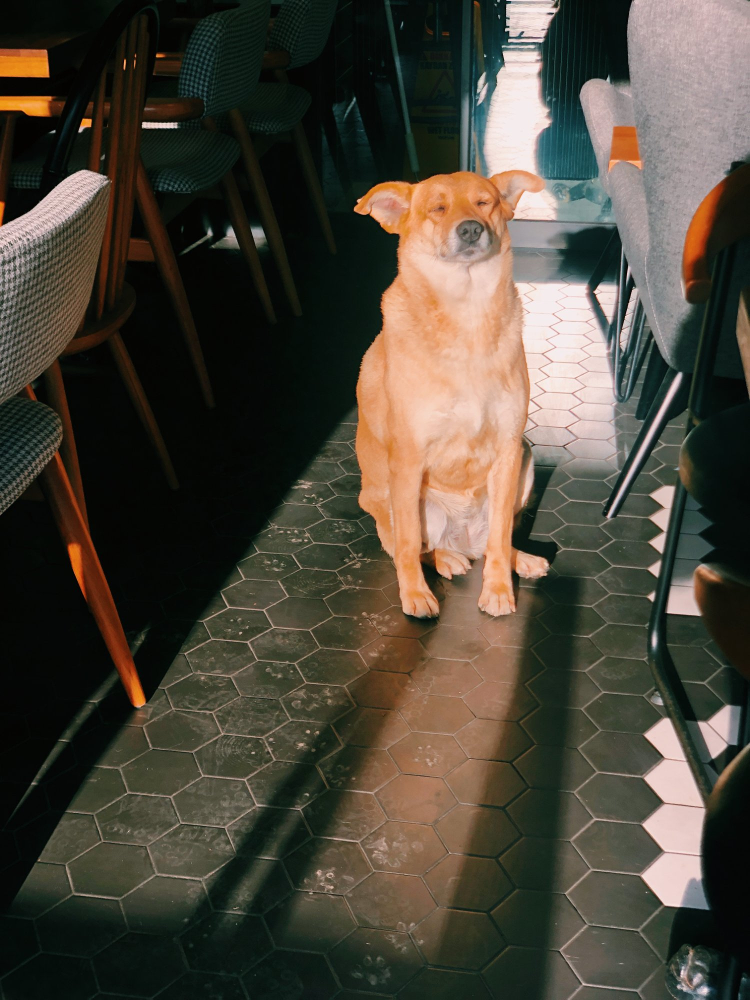

Eat & Drink
Restaurant
Arnavutköy Restaurant
"The holy grail of Yeniköy. A proper raki-balık meyhane right on the water. They bring mezzes, you pick your fish from the display, you drink your raki, you watch the boats pass. Don't skip the salad. If you have kids, ask for the smoke-free cabin on the side."

Restaurant
464 Yeniköy
"More modern and polished than Arnavutköy — great view, excellent food, slightly dressier crowd. Worth booking ahead on weekends. The mezze spread is serious."

Bar
Pero
"Right on the water, beautiful terrazzo floors, the kind of place where you arrive for one drink and leave several hours later. Great cocktails, genuinely lovely space."

Börek & Mantı
Emek Mantı
"Get the manti — tiny Turkish dumplings in yogurt with butter and chili oil. Also get the su börek: layered pastry with white cheese. Looks unassuming, genuinely one of the best things you'll eat here."
Coffee

Café
The Bicycle Café
"The social hub of the neighbourhood. Great coffee, big street dogs, cyclists off long Bosphorus rides. The bench-table setup out front is one of the better places to sit in Istanbul."

Roastery
Grea Coffee Nations
"Tucked behind a park, roasting for cafés across Istanbul. Sit in the courtyard, have an exceptional cup, play with the cat. One of those places you accidentally stay three hours. @greacoffeenations"
Breakfast Café
Yeniköy Coffee House
"Up the hill with a water view. Wood burning stove in winter. Sucuk and eggs, strong tea, unhurried morning. The kind of place that makes you want to move to Istanbul."

Ice Cream
MUÀ Yeniköy
"Get the pistachio. Turkey is where pistachios come from and they know exactly what to do with them. Small café with books and cats upstairs."
Experiences

Seasonal
The Bonito Fish Truck
"Come in autumn and you'll find a man selling fresh bonito from the back of a truck on the main road. Çinekop and İstavrit pulled straight from the Bosphorus. This is what the neighbourhood is actually about."
Tea House
Yeniköy Sahil Kafe
"The çay evi right on the water. Sit, have tea, watch little fish swim below the tables. Turks have this figured out — the right to sit somewhere beautiful and drink tea without being rushed."

Experience
The Taxi Stand, Early Morning
"The drivers gather every morning, drink tea, smoke, and listen to the news on a small radio. It's one of the most Istanbul things you'll see and it happens right on the main road. Don't walk past it."

Just So You Know
The Cats & Dogs
"Every café has a dog. Every fish restaurant has cats waiting outside. The animals of Yeniköy were here before the restaurants and they know it."